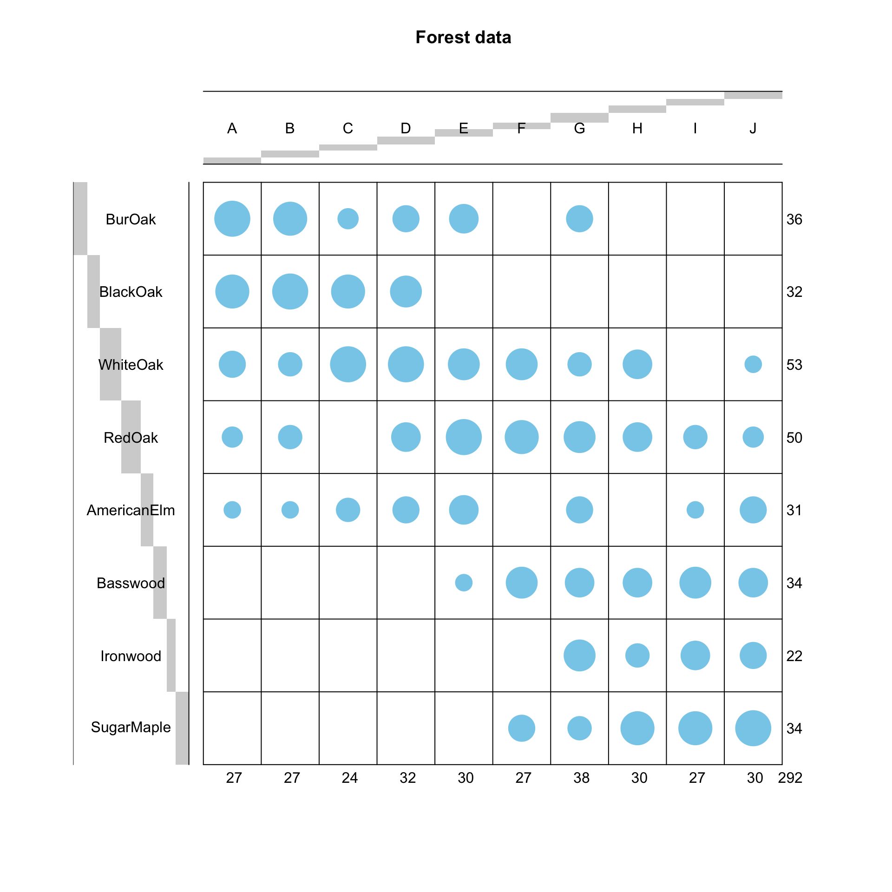
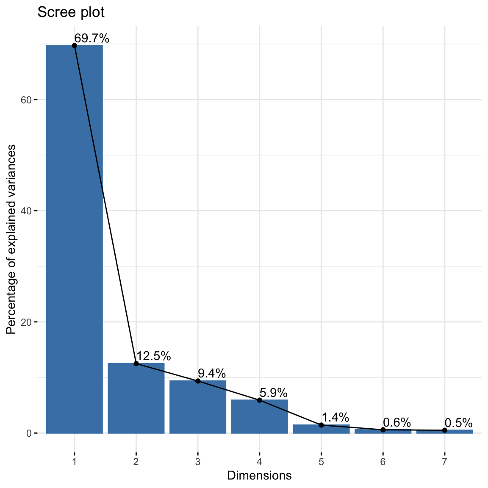
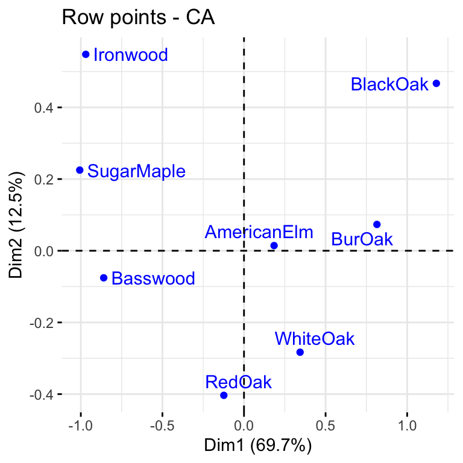
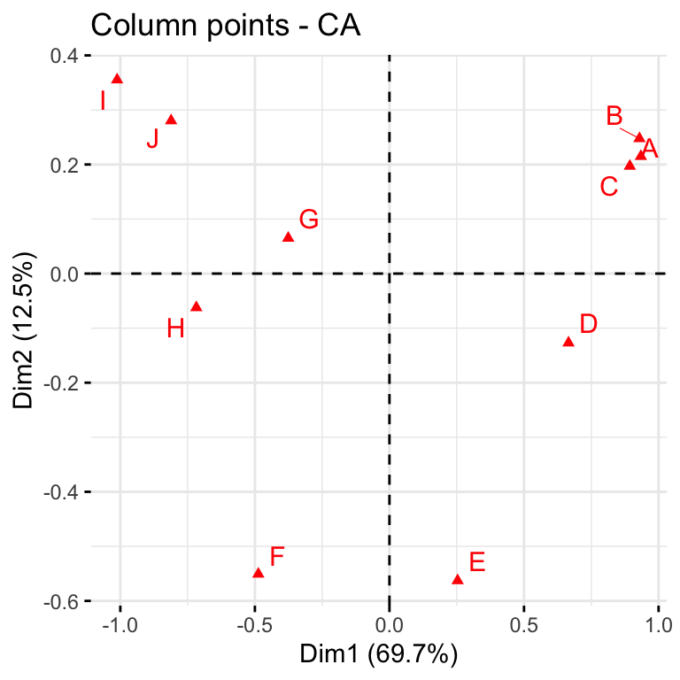
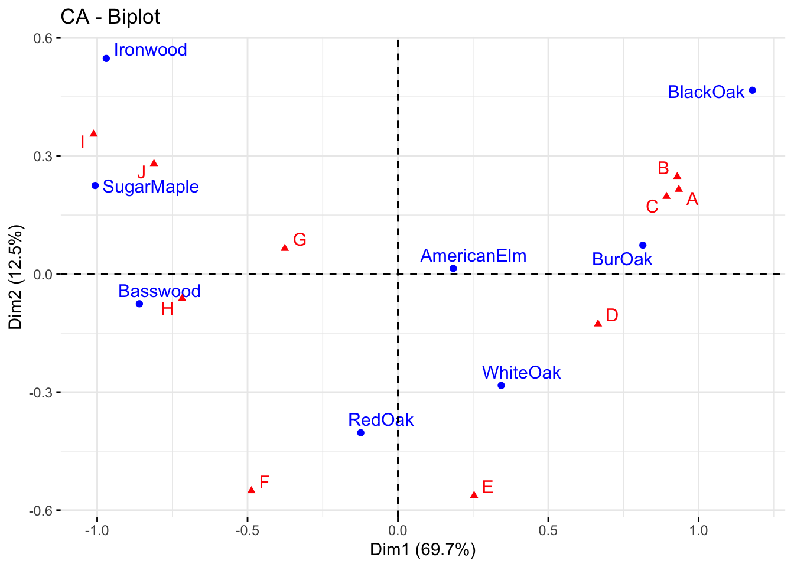
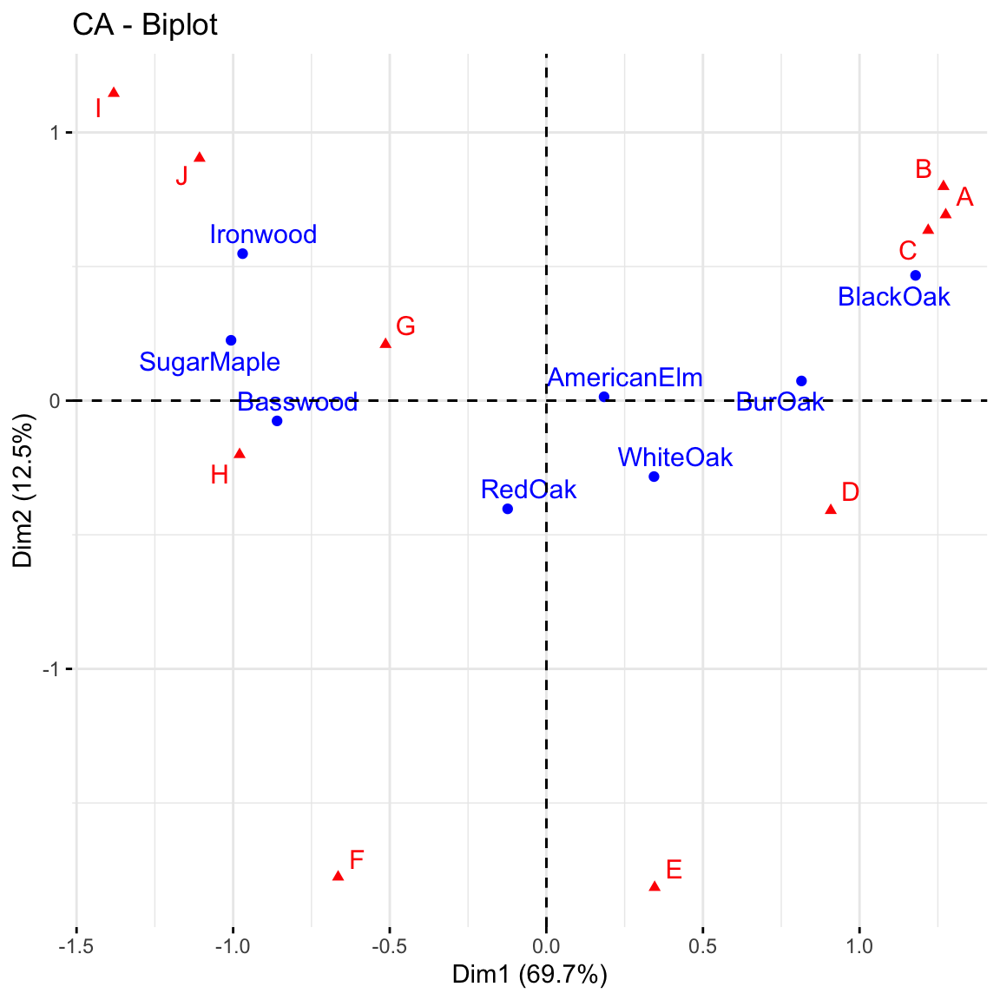
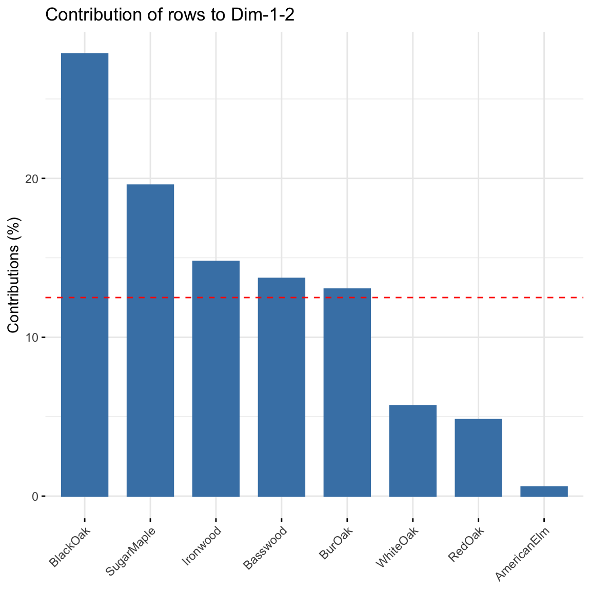
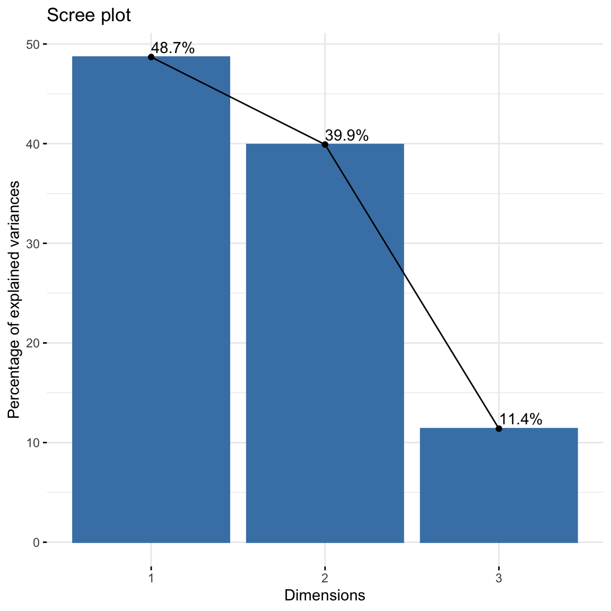
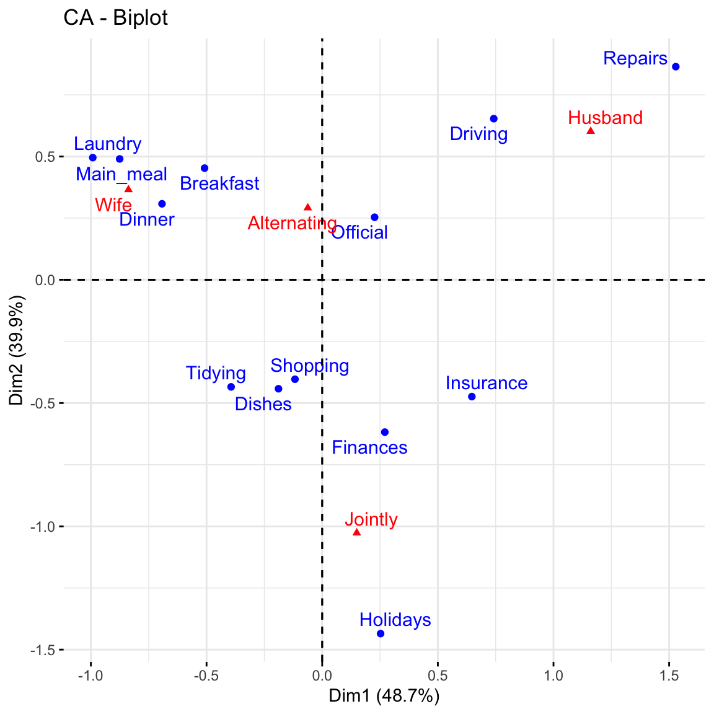
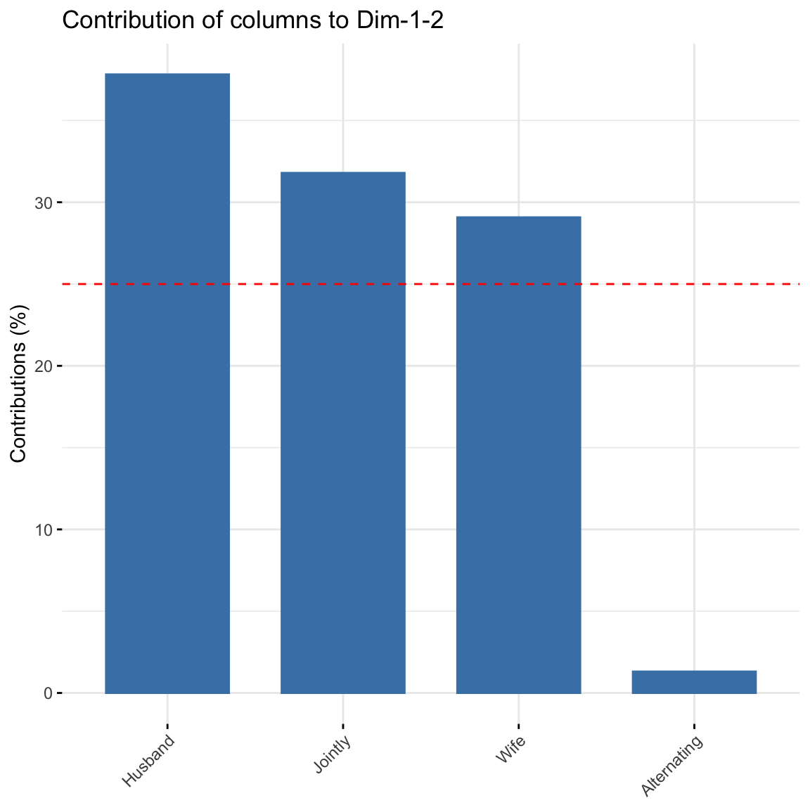

library(FactoMineR)
library(factoextra)Practical 6: Correspondence Analysis
Exercise 1 (Forest data)
Forest data includes the populations of eight species of trees growing on ten upland sites (A-J) in southern Wisconsin. We are going to perform correspondence analysis on this data in R and learn how to interpret the results.
We first load the following packages into the workspace.
Then we create a list of observation for the forest data
A <- c(9,8,5,3,2,0,0,0)
B <- c(8,9,4,4,2,0,0,0)
C <- c(3,8,9,0,4,0,0,0)
D <- c(5,7,9,6,5,0,0,0)
E <- c(6,0,7,9,6,2,0,0)
F <- c(0,0,7,8,0,7,0,5)
G <- c(5,0,4,7,5,6,7,4)
H <- c(0,0,6,6,0,6,4,8)
I <- c(0,0,0,4,2,7,6,8)
J <- c(0,0,2,3,5,6,5,9)
forest_dat <- data.frame(A,B,C,D,E,F,G,H,I,J)
rownames(forest_dat) <- c("BurOak", "BlackOak", "WhiteOak", "RedOak", "AmericanElm",
"Basswood", "Ironwood", "SugarMaple")We now call the library gplots and convert the raw data into a table.
library("gplots")
# convert the data as a table
dt <- as.table(as.matrix(forest_dat))
dt A B C D E F G H I J
BurOak 9 8 3 5 6 0 5 0 0 0
BlackOak 8 9 8 7 0 0 0 0 0 0
WhiteOak 5 4 9 9 7 7 4 6 0 2
RedOak 3 4 0 6 9 8 7 6 4 3
AmericanElm 2 2 4 5 6 0 5 0 2 5
Basswood 0 0 0 0 2 7 6 6 7 6
Ironwood 0 0 0 0 0 0 7 4 6 5
SugarMaple 0 0 0 0 0 5 4 8 8 9The contingency table can be visualised using a balloonplot using the code below.
balloonplot(t(dt), main ="Forest data", xlab ="", ylab="",
label = FALSE, show.margins = TRUE)
Task 1a
Check if there exists significant association between the rows and columns using Chi-square test. What is the total amount of variability contained in the data set? Recall: the amount of variability is measured by the total inertia, and can be obtained as \(\phi^{2} = \chi^{2}/\mbox{grand total}\)
Click for solution
# chi-square test
dat <- forest_dat
chisq <- chisq.test(dat)
chisq
Pearson's Chi-squared test
data: dat
X-squared = 224.85, df = 63, p-value < 2.2e-16The p-value is very small, much smaller than \(0.05\): we reject the null hypothesis and assume that there exists an association between the row and the column.
As for the total inertia, we compute it as follows:
# Total inertia
phi2 <- as.numeric(chisq$statistic/sum(dat))
phi2[1] 0.7700459
Task 1b
Run the correspondence analysis by using the CA() command.
Based on the results:
- Extract the percentage of variance explained and
- Draw a scree plot using the command fviz_screeplot().
Based on examinations, determine the number of dimensions that should be used to represent the association in the data.
Click for solution
res <- CA(dat, graph=FALSE)
res$eig eigenvalue percentage of variance cumulative percentage of variance
dim 1 0.536732020 69.7013032 69.70130
dim 2 0.096181795 12.4903978 82.19170
dim 3 0.072097210 9.3627161 91.55442
dim 4 0.045547474 5.9149038 97.46932
dim 5 0.011065635 1.4370098 98.90633
dim 6 0.004539267 0.5894801 99.49581
dim 7 0.003882488 0.5041892 100.00000We can supplement this with a scree plot. Just look for the “elbow” as we did for PCA.
#scree plot
fviz_screeplot(res, addlabels = TRUE)
How many dimensions do you think is enough to preserve reasonable amount of variability? To have at least \(80\%\) of variations explained, and based on the elbow method heuristic, it seems reasonable to choose 2 dimensions.
Task 1c
Extract the row and column coordinates from the results.
Click for solution
res$row$coord Dim 1 Dim 2 Dim 3 Dim 4 Dim 5
BurOak 0.8146223 0.07340592 -0.3656428 0.27728345 0.011287524
BlackOak 1.1788685 0.46701140 0.3309437 0.05964280 0.023447565
WhiteOak 0.3436803 -0.28310606 0.2576998 -0.18141954 -0.108414950
RedOak -0.1235665 -0.40336558 -0.1119886 0.16405319 0.013825790
AmericanElm 0.1842648 0.01438946 -0.3519356 -0.46413156 0.134306791
Basswood -0.8597898 -0.07549928 0.1162684 0.11671465 0.001282443
Ironwood -0.9698189 0.54802045 -0.3162027 -0.07285919 -0.241365282
SugarMaple -1.0067725 0.22501101 0.2478713 0.04542601 0.147086840res$col$coord Dim 1 Dim 2 Dim 3 Dim 4 Dim 5
A 0.9341805 0.21494992 -0.054425848 0.28278501 0.0201338064
B 0.9289734 0.24759385 -0.009334911 0.30496922 0.0674543646
C 0.8931982 0.19694742 0.382075086 -0.42567165 -0.0859783259
D 0.6653449 -0.12697131 0.043769437 -0.17061510 -0.0002006079
E 0.2533103 -0.56279913 -0.406805727 -0.10638210 0.0765759116
F -0.4870981 -0.55079395 0.408458894 0.18857423 0.0338399764
G -0.3760968 0.06501352 -0.378830128 -0.01720966 -0.1757222461
H -0.7175849 -0.06230205 0.284290270 0.10434288 -0.1104654143
I -1.0119621 0.35528880 -0.034786432 0.08177379 0.0216169436
J -0.8112801 0.28029409 -0.028901048 -0.22592714 0.1967270751
Task 1d
The first two dimensions can be used to plot row and column profiles using the code below
fviz_ca_row(res, repel = TRUE)
fviz_ca_col(res, repel = TRUE) 
We can use the code below to generate the symmetric biplot
fviz_ca_biplot(res, repel = TRUE) #"repel" away text from the data points.
Explain the association between the trees and the sites.
Solutions to Task 1d
Click for solution
The distance between any row points (or column points) can be used as a measure of their similarity (e.g. row points with similar profiles are close to each other on the plot). From the plot, the sites A, B and C show similar pattern (distribution). The distance between any row and column profile is not a meaningful quantity, but we can just make a general statement about the pattern. For instance, sites A-E tend to relatively more oak species, while sites I, J, G tend to have more Ironwood and SugarMaple. Finally, we observe that row points (i.e. tree species) are quite scattered around, while column points (i.e. sites) present more association. This means that while species of trees growing in the same sites might present different behaviours in other sites, some site profiles (e.g. A, B, C) have a very similar composition of trees.
Task 1e
The asymmetric biplot is a tool that can be used to interpret more rigorously the distance between (with the symmetric biplot we could just make a general statement). The idea is to plot one category (e.g. row points) using principal coordinates and the other (e.g. column points) using so-called standard coordinates.
The asymmetric row biplot can be constructed using the following code:
fviz_ca_biplot(res,
map ="rowprincipal",
repel = TRUE)
Asymmetric biplot
The contributions of rows to the first two dimensions can be plotted:
fviz_contrib(res, choice = "row", axes = 1:2)
Run the codes given above and give a detailed interpretation of the plots.
Click for solution
Asymmetric biplot: if a row and a column point are close together, then this indicates a strong association between the corresponding profiles. For instance, blackoak has a strong association with the sites A, B and C while Ironwood, SugarMaple and Basswood are more closely associated with the sites G, H, I and J. You can also make statements about distances: for example, Basswood is closer to H than to G. But be careful: this does not mean that there are more Basswood trees in H but rather that they make up a higher proportion of the trees in H that they do in G. You can revisit the ballon plot we made at the beginning of this lab to check your statements.
Contribution of rows: BlackOak contributed the most to both dimensions in explaining variability in the data while AmericanElm contributed the least. There are 8 trees, thus any distribution greater than 100/8 = 12.5% will contribute more to explaining the variability.
Task 1f
The quality of representation of the rows is measured using the squared cosine (cos2) or the squared correlation. It can be computed as follows
res$row$cos2[,1:2] Dim 1 Dim 2
BurOak 0.74638029 0.0060605181
BlackOak 0.80402992 0.1261817120
WhiteOak 0.37781669 0.2563718273
RedOak 0.06732437 0.7174117897
AmericanElm 0.08645636 0.0005272313
Basswood 0.92865047 0.0071606634
Ironwood 0.66853862 0.2134709480
SugarMaple 0.87388999 0.0436517479Can you try to interpret this result?
Solution to Task 1f
Click for solution
Values closer to 1 suggest a strong association between a category and the dimensions represented in the plot. Clearly Basswood, SugarMaple and BlackOak are highly correlated with dimension 1 but weakly associated with dimension 2. The opposite interpretation can be given for Redoak. This is useful to understand the position of the points in the plot.
Exercise 2 (Analysis of House tasks data)
The dataset housetasks is available in the package factoextra (also available in ade4 package). The data is a contingency table containing 13 house tasks and their repartition in the couple: rows are the different tasks, values are the frequencies of the tasks done as follows:
by the wife only
alternatively
by the husband only
or jointly
We first call the data and the R packages needed.
library("FactoMineR")
library("factoextra")
data(housetasks)
row.names(housetasks)[row.names(housetasks) == "Breakfeast"] <- "Breakfast"
head(housetasks) Wife Alternating Husband Jointly
Laundry 156 14 2 4
Main_meal 124 20 5 4
Dinner 77 11 7 13
Breakfast 82 36 15 7
Tidying 53 11 1 57
Dishes 32 24 4 53Task 2a
Perform the Chi-squre test to check the rows and the columns are independent.
Click for solution
chisq <- chisq.test(housetasks)
chisq
Pearson's Chi-squared test
data: housetasks
X-squared = 1944.5, df = 36, p-value < 2.2e-16chisq$p.value). So CA seems to be a reasonable approach.
Task 2b
Perform the correspondence analysis on this data and interpret the results. From the results, extract the amount of variability explained and draw a scree plot to decide the number of dimensions to use.
Click for solution
res.ca <- CA(housetasks, graph = FALSE)
res.ca**Results of the Correspondence Analysis (CA)**
The row variable has 13 categories; the column variable has 4 categories
The chi square of independence between the two variables is equal to 1944.456 (p-value = 0 ).
*The results are available in the following objects:
name description
1 "$eig" "eigenvalues"
2 "$col" "results for the columns"
3 "$col$coord" "coord. for the columns"
4 "$col$cos2" "cos2 for the columns"
5 "$col$contrib" "contributions of the columns"
6 "$row" "results for the rows"
7 "$row$coord" "coord. for the rows"
8 "$row$cos2" "cos2 for the rows"
9 "$row$contrib" "contributions of the rows"
10 "$call" "summary called parameters"
11 "$call$marge.col" "weights of the columns"
12 "$call$marge.row" "weights of the rows" From res.ca one can extract appropriate quantity of interest for interpretation.
The amount of variability explained is as follows
eig.val <- res.ca$eig
eig.val eigenvalue percentage of variance cumulative percentage of variance
dim 1 0.5428893 48.69222 48.69222
dim 2 0.4450028 39.91269 88.60491
dim 3 0.1270484 11.39509 100.00000About 88.6% of the variation is explained by the first two dimensions. This is an acceptably large percentage. A scree plot can also be used to supplement this.
#screeplot
fviz_screeplot(res.ca, addlabels = TRUE)
Task 2c
As done for the Forest data, generate the symmetric biplot, the contributions of columns and extract the squared cosine (cos2) and give appropriate explanations.
Click for solution
The symmetric biplot is as follows:
# repel= TRUE to avoid text overlapping (slow if many point)
fviz_ca_biplot(res.ca, repel = TRUE)
This graph shows that house tasks such as dinner, breakfeast, laundry are done more often by the wife while driving and repairs are done by the husband.
To visualize the contribution of columns to the first two dimensions, type this:
fviz_contrib(res.ca, choice = "col", axes = 1:2)
Alternating did not contribute much to explaining the variability in the data.
res.ca$row$cos2[,1:2] Dim 1 Dim 2
Laundry 0.73998741 0.18455213
Main_meal 0.74160285 0.23235928
Dinner 0.77664011 0.15370323
Breakfast 0.50494329 0.40023001
Tidying 0.43981243 0.53501508
Dishes 0.11811778 0.64615253
Shopping 0.06365362 0.74765514
Official 0.05304464 0.06642648
Driving 0.43201860 0.33522911
Finances 0.16067678 0.83666958
Insurance 0.57601197 0.30880208
Repairs 0.70673575 0.22587147
Holidays 0.02979239 0.96235977Dinner, Main_meal, Laundry and Repairs are highly correlated with dimension 1 while Holidays, Finances and Shopping are highly correlated with dimension 2.